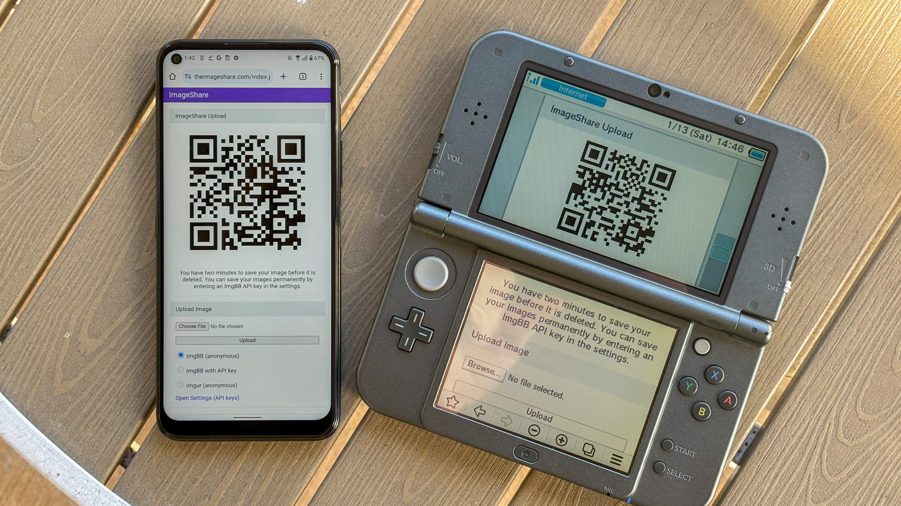
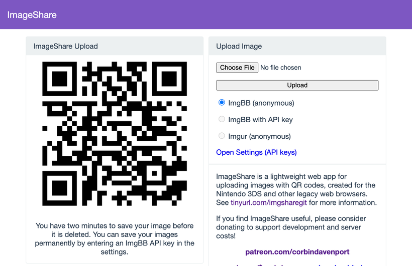
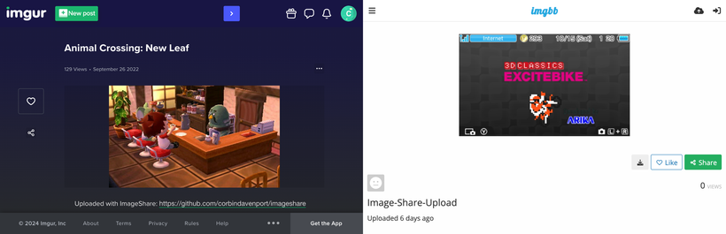
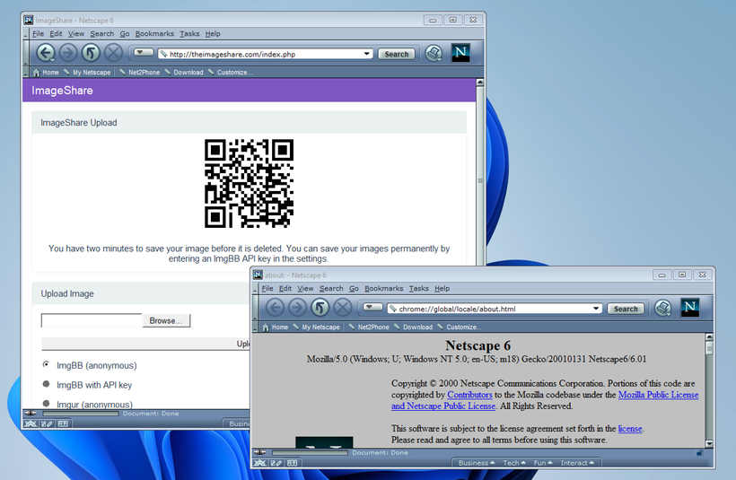

ImageShare is my lightweight web app for uploading and sharing images, originally created as a replacement for the Nintendo 3DS Image Share service. It has gone through a lot of code updates and migrations over the last few years to keep it compatible with aging web browsers, and now I’ve rolled out another update.
ImageShare still allows you to choose an image from your device, click Upload, and get a QR code linking to the image that you can easily scan with another nearby device. It’s still entirely server-side PHP, so it loads quickly, even on low-end and legacy web browsers that can no longer connect to image upload services directly.
The app previously used Imgur for all image uploads, but that API isn’t always reliable, so ImageShare now fully supports ImgBB as an alternative platform. You can select which service to use from the main upload page. For security reasons, images uploaded anonymously through ImgBB are deleted after two minutes, which should be long enough to save the image after scanning the QR code.

There’s also a new option to use ImgBB with your own account, instead of uploading anonymously, by entering an API key in the ImageShare settings. This allows images to be saved permanently to your ImgBB account (unless you delete them later), and the images are always accessible through the ImgBB site on another web browser.
I’ve wanted to add authenticated image uploads for a long time, so the functionality could be closer to uploading screenshots on an Xbox or PlayStation console, but it wasn’t easily doable with Imgur. Just like before, images uploaded from a Nintendo 3DS console have the game title saved with the image when it’s available.

The downside is that the new API key feature doesn’t work on the Nintendo 3DS Browser (and possibly the Wii U Browser, I haven’t checked). As far as I can tell, Nintendo blocks any kind of permanent storage in that browser, even the simple cookies used to store the API key.
ImageShare also now has improved support for other legacy web browsers: it fully works in Netscape Navigator 6 from 2001, and possibly earlier versions. It also now has a proper icon when pinned to the Start menu on Windows 10 Mobile, and there are some more fixes for older iOS devices.

I’ve taken it as a challenge to support as many old web browsers and devices as possible, at least as long as it remains practical. ImageShare also now uses the goQR.me API to generate QR code images, because the deprecated Google API previously in use has stopped working entirely.
I’ve also done a lot of work to make ImageShare as easy to set up on a home server or production site as possible. The dev instructions are now more detailed, and more features that were previously hard-wired in the code are now optional when setting up an ImageShare instance. It’s still a Docker Compose application, so it works on Windows, Mac, and Linux hosts.
The server configuration for ImageShare supports an Imgur API key, an ImgBB API key, or both. If you set up both options, the user can choose which option they want (the ImgBB option with a custom key is always available). For example, only the ImgBB option is enabled on the main server right now (I think Imgur blocked the server’s IP for too many requests, so I’m giving it a break). Plausible Analytics is also now easily configurable, with reporting for page views, basic device and browser information, upload events, and so on.
I’m not aware of any other ImageShare instances, but now is as good a time as any to set one up!
ImageShare has required a lot of work to stay functional on the Nintendo 3DS and other legacy platforms. I’ve gone through three hosting services: first Heroku, then DigitalOcean’s App Platform, then an Ubuntu VPS through Digital Ocean. After that last migration, I reworked it to run in Docker, which has made development and troubleshooting much simpler. That has all ensured ImageShare remains functional on legacy browsers through non-secure HTTP connections, while also supporting newer devices with HTTPS.
I’m not sure how long image hosting platforms will continue working with the current infrastructure, and I do not want to deal with hosting user content. There’s also the issue where the main supported device, the Nintendo 3DS, can’t save settings on the browser side. I’m thinking about how best to handle the project’s future with those problems.
ImageShare might eventually morph into a minimal web server that runs on a computer on your home network, which would be less vulnerable to rate limiting by APIs (or could just dump images directly to a computer). Another option would be improving the self-hosted setup and publishing ImageShare to Docker Hub, where it could be installed on any computer or server with Docker in one command. This is already a popular option for NextCloud, Plex, and other local server software, so it would probably work well for ImageShare.
I don’t have any plans to shut down the current ImageShare site, unless all the image hosting APIs stop working and I don’t have any options left. ImageShare has already outlived the Nintendo service it was initially designed to replace, and I’d like to keep that going.
You can learn more about ImageShare from the GitHub repository, and you can try it out from theimageshare.com. If you want to help keep this service running, please consider joining my Patreon or donating through PayPal and Cash App.